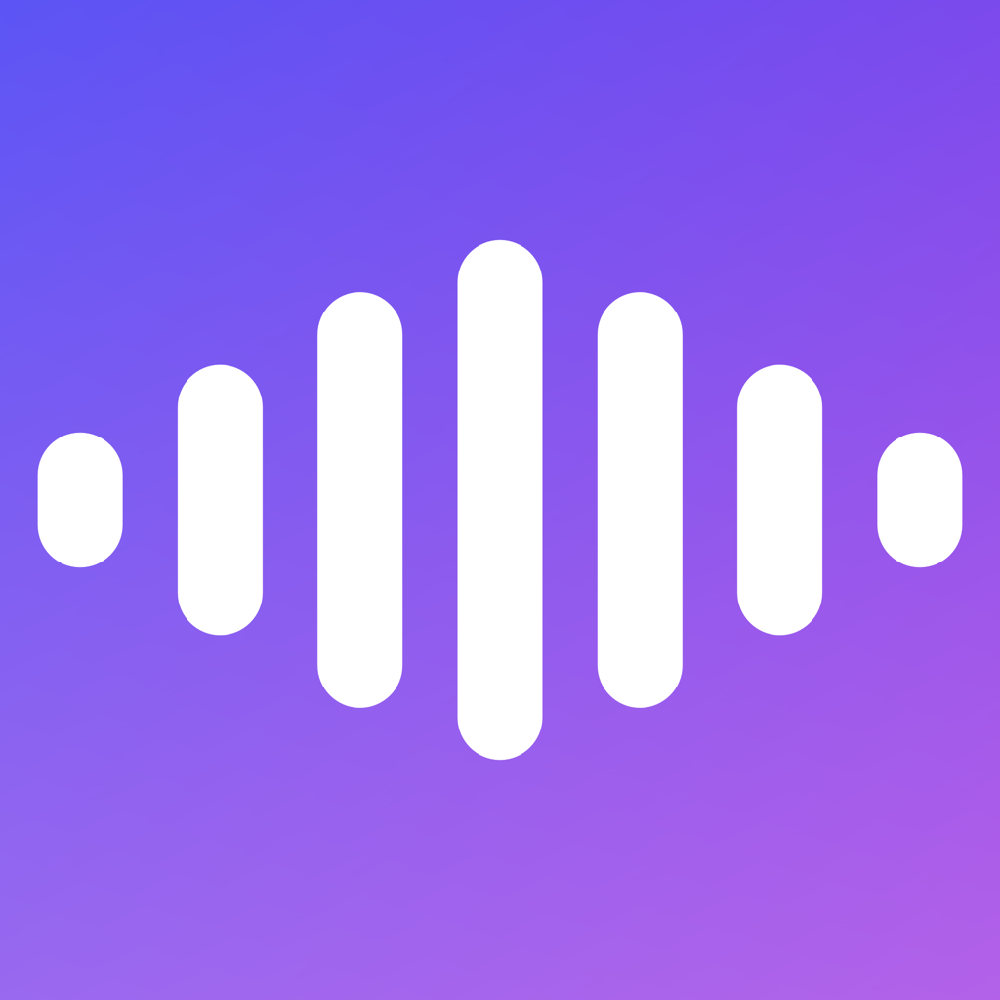

Text to speech that stays on your machine
Bunyi — BOON-yee, /ˈbuːɲi/ — is Malay/Indonesian for “sound.”
A desktop app for Qwen3-TTS built for people who don’t use a terminal. Pick a voice, describe one, or clone one from a clip. Models download themselves with a progress bar; after that it generates offline, and the audio never leaves your computer.
macOS (Apple Silicon) works today and is built from source — there’s no signed release download yet. The Windows and Linux app is a scaffold, not a working build.

Three ways to make a voice
One text box, three modes
A segmented picker at the top switches modes. Every generation is 24 kHz mono WAV, auto-played
when it finishes and saved to the app’s Outputs folder — one click from a reveal button.
Pick from the model’s speakers
Choose a built-in speaker, set a language, and optionally add a style instruction to steer emotion and delivery.
Describe the voice you want
Write a description — “a calm older narrator, slightly gravelly” — and the model builds a voice to match. Style instructions apply here too.
Match a reference clip
Give it a short clip and its transcript. Bunyi resamples to 24 kHz mono for you, and if you leave the transcript blank it transcribes the clip on-device.
Emotion and clones. Cloning runs on the Base model, which isn’t instruction-tuned, so there’s no style field in clone mode — the emotion has to come from the reference clip’s own delivery. Keeping one saved voice per emotion is the practical workaround. This is a limit of today’s 12 Hz models, not of the app.
What’s in the box
Built so nobody has to open a terminal
Models download themselves
First generation in a mode fetches that model (~1.5–4.5 GB) with a progress bar and an ETA (“42% — about 3.1 MB/s, ~6 min left”). Resumable, incremental, and skipped entirely once complete.
Offline after that
A complete model on disk is used with no network at all. Generation, playback, and file output are local.
Stall detection
A disk monitor logs bytes-on-disk every 10 seconds during a multi-gigabyte file and warns when nothing new has landed for 30 — so a dead connection looks different from a slow one.
Saved voices
Store a clone recipe — name, reference clip, transcript. The clip is copied into app storage, so it survives relaunch and folder cleanups.
On-device transcription
Cloning needs the reference transcript to align audio to words. Leave it blank and the app transcribes locally (Apple’s Speech framework on macOS); anything you type wins.
Backup and restore
Archive the whole models folder to one stored (uncompressed) zip with a real progress bar and a Stop button. Restore merges per repo and never clobbers a model you already have.
Bring your own model host
Each mode takes a Hugging Face repo ID or an https:// base URL you control. Bunyi reads manifest.txt from your server and pulls the files directly.
Your own models folder
Point storage at an external drive and it stays there across launches. Settings also shows copyable hf download commands with the real path filled in.
A real log window
Timestamped, selectable, copyable. Downloads, tokenizer steps, transcription results, token milestones, output paths and timings, and full error text.
Won’t lose your work
Closing the window mid-download or mid-generation asks first, with “Keep Working” as the safe default.
Status, honestly
Three operating systems, two codebases, one spec
Qwen3-TTS has no single cross-platform runtime — MLX is Apple-Silicon only — so Bunyi is native apps per platform, kept at feature parity by a shared specification rather than shared code.
| Target | Stack | Status |
|---|---|---|
| macOS Apple Silicon, macOS 15+ |
Swift + MLX + SwiftUI | Working Reference implementation; build it yourself |
| Windows and Linux One app, both systems |
C# .NET + Avalonia + ONNX Runtime | Scaffold Structure, build docs, and stubs — not yet implemented |
The spec is the source of truth. Observable behavior lives in FEATURES.md, and on-disk layout lives in DATA-FORMATS.md — so a models folder, a backup zip, or a voices library is interchangeable between apps of the same runtime family. A feature change updates the spec and every app.
Get it running
Build the macOS app
There’s no notarized download yet, so today this means a build from source on an Apple Silicon Mac running macOS 15 or later, with Xcode 26 (the app uses Swift 6.2 and mlx-swift’s Metal toolchain).
-
Clone and generate the Xcode project
The
.xcodeprojis generated fromproject.ymland isn’t checked in — edit the YAML, never the project.git clone https://github.com/shaztechio/bunyi-app.git cd bunyi-app/apps/macos brew install xcodegen xcodegen generate -
Install the Metal toolchain
Xcode 26 ships the Metal compiler separately, and mlx-swift compiles shaders. Skip this and the first build fails with “cannot execute tool ‘metal’”.
xcodebuild -downloadComponent MetalToolchain -
Build and run
Open
Bunyi.xcodeprojand press ⌘R, or build from the command line. Xcode resolves swift-qwen3-tts and its dependencies on the first build.xcodebuild -scheme "Bunyi" -destination 'platform=macOS' build -
Generate something
Type text, pick a mode, hit Generate. The first run in each mode downloads that mode’s model with a progress bar; every run after that is offline.
Working on Windows or Linux? The .NET app is a scaffold — start from apps/dotnet/AGENTS.md and the spec. It can’t be built on a Mac.